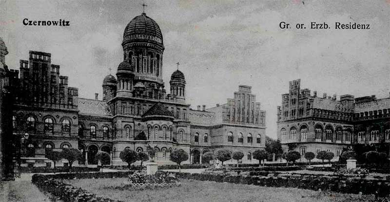

Автором грандіозного проекту став молодий чеський архітектор Йозеф Главка, який обійняв посаду заступника голови будівничого комітету (Євгена Гакмана).
6 липня 1864 року буковинський єпископ на місці старої резиденції урочисто заклав "угольний" (наріжний) камінь у фундамент каплиці Св. Іоана Нового Сучавського. З цього розпочалося будівництво комплексу, що тривало майже двадцять років.
За масштабами будівництво резиденції не мало аналогів на Буковині й коштувало астрономічні, за тодішніми мірками, гроші — 1 мільйон 750 тисяч гульденів. Фінансування головним чином здійснювалось за рахунок Буковинського православного релігійного фонду. Як прояв добросусідства, свої пожертви зробили місцеві німецька та польська католицькі громади, а також іудеї. Значну допомогу надавало Міністерство культів і освіти Австро—Угорщини.
Вирішивши максимально використовувати місцеві будівельні матеріали, Й. Главка почав вивчати місцеві надра. Він особисто побував у багатих на запаси пісковика, селах Чуньків, Василів, Дорошівці. У вказані населені пункти були відряджені досвідчені каменярі, які навчали місцевих майстрів тонкощам ремесла. Як наслідок було запущено каменярський конвеєр, звідки потоком надходили необхідні матеріали. У самих Чернівцях запрацювали два цегельних та один керамічний заводи, а також будівельна школа. Особлива увага приділялась виготовленню клінкера.
Від виробників вимагали продукцію з найкращими якісними характеристиками. Зодчий регулярно навідувався на підприємства й давав вказівки щодо удосконалення технології. На всіх цегельнях сировину для майбутньої цегли заготовляли завчасно. Глину зберігали у спеціальних буртах на відкритому повітрі, де взимку вона мала обов'язково перемерзнути й лише після цього з неї починали виготовляти сирець. Практично кожна цеглина вимірювалася та перевірялася на звук.
Останній етап контролю якості проходив безпосередньо на будівництві. Перед в'їздом на територію було зведено спеціальну естакаду двадцятиметрової висоти, з якої цеглини скидали на тротуар, і якщо хоч на одній з'являлися тріщини, то забраковували всю партію.
Процес будівництва відбувався ретельно та акуратно. Для забезпечення високої якості цегляної кладки Й. Главка запросив із західних регіонів Австрії тридцять найкращих мулярів, але й їм заборонялося протягом зміни використовувати більше сотні цеглин. Будівельний розчин розводили у величезних чанах, куди додавали падаль та курячі яйця.
Чудові властивості місцевої будівельної сировини були підтверджені у 1878 році, коли за розпорядженням чеського митця виготовили велику декоративну вазу з буковинського алебастру, яку демонстрували у Богемії, а згодом — у Парижі. Організатори вернісажу оцінили шедевр у сімсот гульденів та ввели Й. Главку до списку переможців. Водночас, зодчий привернув увагу європейських спеціалістів до ще одного буковинського дива — так званого "Коралового Каменю", який сяяв гарними кольорами і був помережаний оригінальними природними візерунками. Фрагмент коралового каменю ще й дотепер можна побачити в оформленні "Мармурової зали" резиденції.
При будівництві, передбачаючи сейсмічні особливості карпатського регіону, широко застосовувалися металеві конструкції, що значно підвищило міцність і довговічність будівлі. Руйнівні карпатські землетруси (1940) та (1977), хвилі якого прокотились і Буковиною, жодним чином не відобразились на резиденції.
(Джерело: тисни тут)Відкриття університету
Указом австрійського імператора Франца-Йосифа від 31 березня 1875 р. був заснований Чернівецький університет. У тому числі й богословський греко-православний факультет – єдиний православний факультет в Австрійській імперії.
4 жовтня 1875 р. відбулося урочисте відкриття університету, якому надали назву Чернівецький університет ім.Франца-Йосифа.
Упродовж ХХ століття він декілька разів змінював назву: університет імені Франца Йосифа (нім. Franz Josephs) у 1875–1918 pp., університет імені короля Фердинанда І (1920); Universitatea Regele Carol I din Cernăuţi (1933), Чернівецький державний університет (1940 р.). З 1989 року Чернівецькому університетові присвоєне ім'я Юрія Федьковича. У 2000 р., після надання закладові статусу національного, отримав сучасну назву – Чернівецький національний університет імені Юрія Федьковича.
(Джерело: тисни тут)Перший ректор — відомий учений і громадський діяч